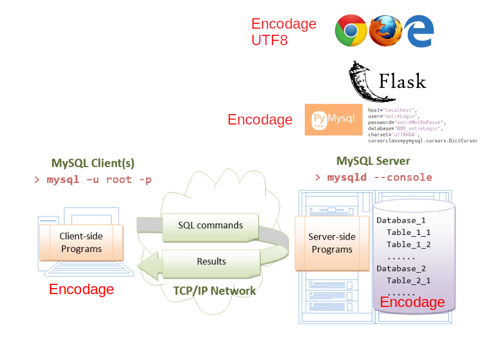

rappel :
Lors de l’écriture des chaînes de texte :
Dans la documentation les mots clés de SQL sont toujours notés en majuscules, mais ce n’est pas obligatoire, la casse n’est pas prise en compte
Sensibilité à la casse des noms des objets (table base colonne)
tester
SHOW GLOBAL VARIABLES LIKE 'lower_case_table_names';sur Linux : sensible à la casse pour le nom des bases et des tables sur windows : non sensible à la casse
CREATE OR REPLACE TABLE `TD_tab` (
`colA` INT PRIMARY KEY,
colB VARCHAR(50)
);
SELECT colA,colB FROM TD_tab;
SelecT colA,colB FroM TD_tab;
SELECT Cola,Colb FROM TD_tab;
SELECT colA,colB FROM td_tab;
DROP TABLE TD_tab;pour modifier cette variable, il faut modifier le fichier my.cnf ou préciser la variable dans les options au lancement du client mysql
ATTENTION : OR REPLACE dans la création de la table ne fonctionne que sur mariadb et non sur mysql
Sur vos machines personnelles :
# sudo mysql -u root -p
CREATE DATABASE BDD_s2_td;
-- GRANT ALL PRIVILEGES ON *.* To 'login';Un jeu de caractères est un ensemble de symboles et de codes.
Une collation est un ensemble de règles permettant la comparaison de caractères dans un jeu.
MySQL choisit le jeu de caractères et la collation de base de données comme ceci :
DROP TABLE IF EXISTS TD_v;
CREATE TABLE TD_v (
vdata varchar(80) NOT NULL
) engine=InnoDB DEFAULT CHARSET=utf8;
INSERT INTO TD_v values ('naive');
INSERT INTO TD_v values ('naïve');
INSERT INTO TD_v values ('Naive');
INSERT INTO TD_v values ('Naïve');
SELECT vdata FROM TD_v;
SELECT DISTINCT vdata FROM TD_v;
SELECT DISTINCT BINARY(vdata) FROM TD_v;
SELECT vdata FROM TD_v WHERE vdata = 'naive';
SHOW CREATE TABLE TD_v;
SHOW FULL COLUMNS FROM TD_v;
-- DROP TABLE IF EXISTS TD_v;Donc parfois, les caractères sont différents mais identiques… ça dépend de la collation
Dans la majorité des encodages dont UTF8, les opérateurs = ou LIKE ne sont pas sensible à la casse, il faut ajouter BINARY
SELECT *
FROM TD_v
WHERE vdata LIKE 'NA%'; -- insensible à la casseSELECT *
FROM TD_v
WHERE vdata LIKE BINARY 'NA%'; -- sensible à la casseSHOW COLLATION;
SHOW CHARACTER SET;
SHOW CHARACTER SET WHERE Charset='latin1';
SHOW CHARACTER SET WHERE Charset='utf8';
SHOW CHARACTER SET WHERE Charset='utf8mb4';
SHOW VARIABLES WHERE Variable_name LIKE '%database%';article sur le sujet et connaître les règles pour classer des mots
CREATE DATABASE BDD_login DEFAULT CHARACTER SET utf8 DEFAULT COLLATE utf8_general_ci;
SHOW CREATE DATABASE BDD_login; -- BDD_s2_td
ALTER DATABASE BDD_login CHARACTER SET utf8 COLLATE utf8_general_ci;
SHOW CREATE DATABASE BDD_login;
SHOW CREATE TABLE TD_v;
ALTER DATABASE BDD_login CHARACTER SET utf8mb4 COLLATE utf8mb4_general_ci;
SHOW CREATE DATABASE BDD_login;
SHOW CREATE TABLE TD_v;ATTENTION : la modification de l’encodage et de la collation d’une base de données n’est prise en compte que pour les nouveaux élèments (tables)
ALTER TABLE tbl_name CONVERT TO CHARACTER SET utf8 COLLATE utf8_general_ci;
ALTER TABLE `TD_v` CHANGE `vdata` `vdata` VARCHAR(200) CHARACTER SET utf8mb4 COLLATE utf8mb4_general_ci NULL DEFAULT NULL ;
SHOW TABLE STATUS WHERE name like 'TD_v';
SHOW CREATE TABLE TD_v;
ALTER TABLE TD_v CONVERT TO CHARACTER SET utf8 COLLATE utf8_general_ci;
SHOW CREATE TABLE TD_v;
SHOW TABLE STATUS WHERE name like 'TD_v';Pour une application web, il est fortement conseillé d’encoder les caractères en UTF-8mb4 et mettre en collation utf8mb4_general_ci
LOAD DATA LOCAL INFILE 'ARTICLE.csv' INTO TABLE ARTICLE CHARACTER SET utf8mb4
FIELDS TERMINATED BY ',';une collation peut s’appliquer juste à un champ, le but de cet exercice est de vous montrez les problèmes liés au tri
SHOW COLLATION;
SHOW CHARACTER SET;
SHOW Collation WHERE Charset='utf8mb4';
SHOW CHARACTER SET WHERE Charset='utf8mb4';
DROP TABLE IF EXISTS TD_collation;
CREATE TABLE TD_collation (
texte VARCHAR(255)
)engine=InnoDB CHARSET=utf8mb4;
INSERT INTO TD_collation VALUES ('Bénédicte');
INSERT INTO TD_collation VALUES ('Benedicte');
INSERT INTO TD_collation VALUES ('Botin');
INSERT INTO TD_collation VALUES ('andré');
INSERT INTO TD_collation VALUES ('andrei');
INSERT INTO TD_collation VALUES ('Azimov');
INSERT INTO TD_collation VALUES ('zigoto');
INSERT INTO TD_collation VALUES ('Zapotev');
INSERT INTO TD_collation VALUES ('Zapötev');
INSERT INTO TD_collation VALUES ('u');
INSERT INTO TD_collation VALUES ('û');
INSERT INTO TD_collation VALUES ('ù');
INSERT INTO TD_collation VALUES ('ü');
-- INSERT INTO TD_collation VALUES ('Âatest');
-- INSERT INTO TD_collation VALUES ('Áatest');
-- INSERT INTO TD_collation VALUES ('Ăatest');
-- INSERT INTO TD_collation VALUES ('Äatest');
-- INSERT INTO TD_collation VALUES ('Aatest');
-- INSERT INTO TD_collation VALUES ('áatest');
-- INSERT INTO TD_collation VALUES ('ãatest');
-- INSERT INTO TD_collation VALUES ('åatest');
-- INSERT INTO TD_collation VALUES ('âatest');
-- INSERT INTO TD_collation VALUES ('ąatest');
-- INSERT INTO TD_collation VALUES ('āatest');
-- INSERT INTO TD_collation VALUES ('äatest');
-- INSERT INTO TD_collation VALUES ('aatest');
SELECT *
FROM TD_collation
ORDER BY texte;
SELECT *
FROM TD_collation
ORDER BY texte DESC;
SELECT *
FROM TD_collation
ORDER BY texte COLLATE utf8mb4_bin;
SELECT *
FROM TD_collation
ORDER BY texte COLLATE utf8mb4_bin DESC;
-- sur mysql
SELECT *
FROM TD_collation
WHERE texte LIKE 'a%'
ORDER BY texte COLLATE utf8mb4_0900_as_cs ;
SELECT *
FROM TD_collation
WHERE texte LIKE 'a%'
ORDER BY texte COLLATE utf8mb4_0900_as_cs DESC;
SHOW CREATE TABLE TD_collation;SELECT * FROM TD_collation
WHERE texte = 'Benedicte'
OR texte = 'ZAPOTEV'
ORDER BY texte ;
SELECT * FROM TD_collation
WHERE texte = 'Benedicte'
OR texte = 'ZAPOTEV'
ORDER BY texte COLLATE utf8mb4_bin;
SELECT * FROM TD_collation
WHERE texte COLLATE utf8mb4_general_ci = 'Benedicte'
OR texte COLLATE utf8mb4_general_ci = 'ZAPOTEV';
SELECT * FROM TD_collation
WHERE texte COLLATE utf8mb4_bin = 'Benedicte'
OR texte COLLATE utf8mb4_bin = 'ZAPOTEV';test : Uniquement sur MySql de ORACLE
quelle est la différence entre cs et ci ?
SELECT * FROM TD_collation
WHERE texte = 'Benedicte'
OR texte = 'ZAPOTEV';
SELECT * FROM TD_collation
WHERE texte COLLATE utf8mb4_0900_as_ci = 'Benedicte'
OR texte COLLATE utf8mb4_0900_as_ci = 'ZAPOTEV';
SELECT * FROM TD_collation
WHERE texte COLLATE utf8mb4_0900_as_cs = 'Benedicte'
OR texte COLLATE utf8mb4_0900_as_cs = 'ZAPOTEV';SHOW Collation WHERE Charset='utf8mb4';ALTER TABLE TD_collation CONVERT TO CHARACTER SET utf8mb4 COLLATE utf8mb4_bin;
SELECT * FROM TD_collation ORDER BY texte ;
SELECT * FROM TD_collation ORDER BY texte COLLATE utf8mb4_general_ci;
SHOW CREATE TABLE TD_collation;
ALTER TABLE TD_collation CHANGE texte texte VARCHAR(200) CHARACTER SET utf8mb4 COLLATE utf8mb4_general_ci ;
SELECT * FROM TD_collation ORDER BY texte ;
SELECT * FROM TD_collation ORDER BY texte COLLATE utf8mb4_general_ci;
SHOW CREATE TABLE TD_collation;Sur ORACLE et SQLSERVER les collations sont plus nombreuses et plus précises
collation mysql documentation mysql
documentation pour aller plus loin
CONCLUSION :
Utiliser en web de préférence l’encodage de caractères : UTF8
CREATE TABLE matable (
....
)ENGINE=InnoDB AUTO_INCREMENT=10 DEFAULT CHARACTER SET utf8mb4
DEFAULT COLLATE utf8mb4_general_ci;voir les liens ci dessous :
http://dev.mysql.com/doc/refman/5.7/en/charset-applications.html
https://www.eversql.com/mysql-utf8-vs-utf8mb4-whats-the-difference-between-utf8-and-utf8mb4/
Modifier ce script si il ne fonctionne pas
DROP TABLE IF EXISTS TD_collation;
CREATE TABLE TD_collation (
texte VARCHAR(191) NOT NULL
)engine=InnoDB CHARACTER SET utf8 DEFAULT COLLATE utf8_general_ci; -- à modifier
INSERT INTO TD_collation VALUES ('foo - bar');
INSERT INTO TD_collation VALUES ('foo 𝌆 bar');
INSERT INTO TD_collation VALUES ('foo 🎼 - 🎿 bar');
INSERT INTO TD_collation VALUES ('foo🦔 - 🦕 - 🦖 - 🥩 - 🧦bar');
INSERT INTO TD_collation VALUES ('⚡ Vente Flash ⚡ à ne pas manquer !');
INSERT INTO TD_collation VALUES ('🔥 LES SOLDES commencent ! 🔥 sur 📱');
SELECT * FROM TD_collation;Rôle de utf8mb4 : modifier l’encodage utf8 par utf8mb4
Parfois attention à l’encodage du terminal SHOW VARIABLES WHERE Variable_name LIKE 'character%';
Pour modifier l’encodage
SET CHARACTER SET utf8mb4;
SELECT * FROM TD_collation;
SET CHARACTER SET latin1;
SELECT * FROM TD_collation;L’instruction ci dessous affiche les variables d’environnement d’une session concernant l’encodage :
SHOW VARIABLES
WHERE
Variable_name LIKE 'character\_set\_%'
OR Variable_name LIKE 'collation%';
tester les commandes ci-dessous puis la commande ci-dessus
SET NAMES utf8mb4;SET NAMES latin1;Sur un terminal sur Windows (invité de commandes), la collation est “windows CP850” fix the problem fix the problem in my.cnf autre autre2 sur console Using UTF-8 Encoding (CHCP 65001) in Command Prompt / Windows
tester SELECT * FROM TD_collation;
puis
tester le code du cas particulier
-- Maxlen indique le nombre maximal d'octets requis pour stocker un caractère
SELECT * FROM information_schema.CHARACTER_SETS WHERE MAXLEN > '2';
-- type d'encodage depuis une connexion
SHOW VARIABLES LIKE 'char%';
-- type de collation depuis une connexion
SHOW VARIABLES LIKE 'colla%';
SELECT _latin1'été', _utf8'été', _cp850'été';
SET NAMES cp850;
SELECT _latin1'été', _utf8'été', _cp850'été';
-- type d'encodage depuis une connexion
SHOW VARIABLES LIKE 'char%';
-- type de collation depuis une connexion
SHOW VARIABLES LIKE 'colla%'
SET NAMES utf8mb4;
SELECT _latin1'été', _utf8'été', _cp850'été';
SELECT CONVERT(CAST(vdata as BINARY) USING latin1) FROM TD_v;
SELECT DISTINCT CONVERT(CAST(vdata as BINARY) USING latin1) FROM TD_v;
SELECT vdata FROM TD_v;SELECT BENCHMARK(100000000, (SELECT 'u'='ü' collate utf8mb4_bin));
SELECT BENCHMARK(100000000, (SELECT 'u'='ü' collate utf8mb4_general_ci));
SELECT BENCHMARK(100000000, (SELECT 'u'='ü' collate utf8mb4_swedish_ci));L’instruction ci dessous donne une idée des variables d’une session MYSQL :
SHOW STATUS;DROP TABLE IF EXISTS TD_v, TD_collation;mysqld --help --verbose | grep my.cnfsql_mode doit parfois être modifiéSHOW VARIABLES WHERE Variable_name LIKE 'sql_mode';
SELECT @@sql_mode;select @@global.version;
select @@global.max_connections;
select @@global.wait_timeout;
select @@global.sort_buffer_size;
select @@global.tmpdir;
select * from performance_schema.variables_info where variable_name like 'max_conn%';
select * from performance_schema.variables_info where variable_name like 'wait_timeout';
select * from performance_schema.variables_info where variable_name like 'sort_buffer_size';
-- https://blog.capdata.fr/index.php/nouveautes-mysql-8-0-variables-persistes/https://zestedesavoir.com/tutoriels/1114/comprendre-les-encodages/3-pratique/
iconv -f iso-8859-15 -t utf-8 fichier > fichier2
#Ce code convertit le fichier "fichier" encodé en ISO en UTF8, qui sera disponible dans le fichier2
#https://docs.moodle.org/19/fr/Conversion_de_fichiers_en_UTF-8
https://artemklevtsov.gitlab.io/uchardet/
https://github.com/freedesktop/uchardet
https://www.fr.linuxfromscratch.org/view/blfs-stable/general/uchardet.html
encguess test.txt # sur debian
-- exemple encodage
https://buzut.net/cours/computer-science/encodage-du-texte-en-unicode
https://www3.ntu.edu.sg/home/ehchua/programming/sql/MySQL_HowTo.html
https://runebook.dev/fr/docs/mariadb/systemd/index
https://mariadb.com/kb/en/starting-and-stopping-mariadb-automatically/